Lakay
Haïti
Français · créole haïtien
Portes de maison gingerbread qui s'ouvrent, lettrage peint des tap-taps
Voir la démonstration →
Madras
Martinique · Guadeloupe
Français · créole antillais
Coiffe tèt maré qui se dénoue, photo dans une fenêtre de case créole
Voir la démonstration →
Kente
Ghana
English · twi
Bandes tissées qui s'ouvrent comme un métier, noir et or, symbole adinkra
Voir la démonstration →
Owambe
Nigeria (yoruba)
English · yoruba
Éventail doré qui s'ouvre, couverture de magazine de mode
Voir la démonstration →
Toghu
Cameroun
Français
Pans de toghu brodé qui glissent, médaillon royal, nuit et étoiles
Voir la démonstration →
Teranga
Sénégal
Français · wolof
Voile de bazin blanc qui se lève, arabesques et filets dorés
Voir la démonstration →
Sape
Congo (RDC, Brazzaville)
Français · lingala
Étiquette de couture qui se retourne, catalogue de mode aux couleurs franches
Voir la démonstration →
Champêtre
Classique · campagne
Français
Serviette de lin nouée d'un brin de lavande, polaroïd et fleurs des champs
Voir la démonstration →
Bohème chic
Classique · bohème
Français
Herbes de la pampa qui s'écartent, arches terre cuite, lumière de fin d'été
Voir la démonstration →
Classique
Classique · intemporel
Français
Enveloppe ivoire au sceau de cire, monogramme et double filet doré
Voir la démonstration →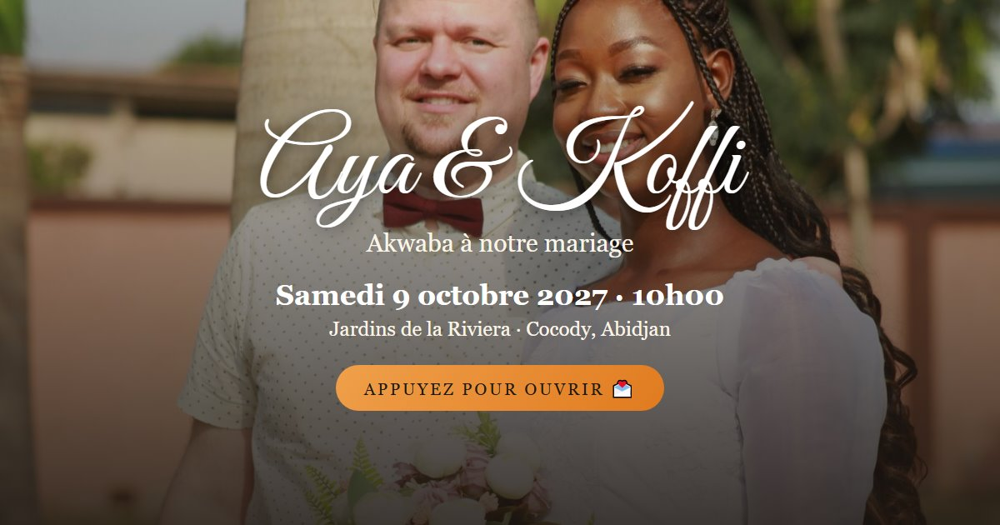
Kita
Côte d'Ivoire
Français
Mosaïque de carreaux de pagne qui se retournent, grille de tuiles orange et noir
Voir la démonstration →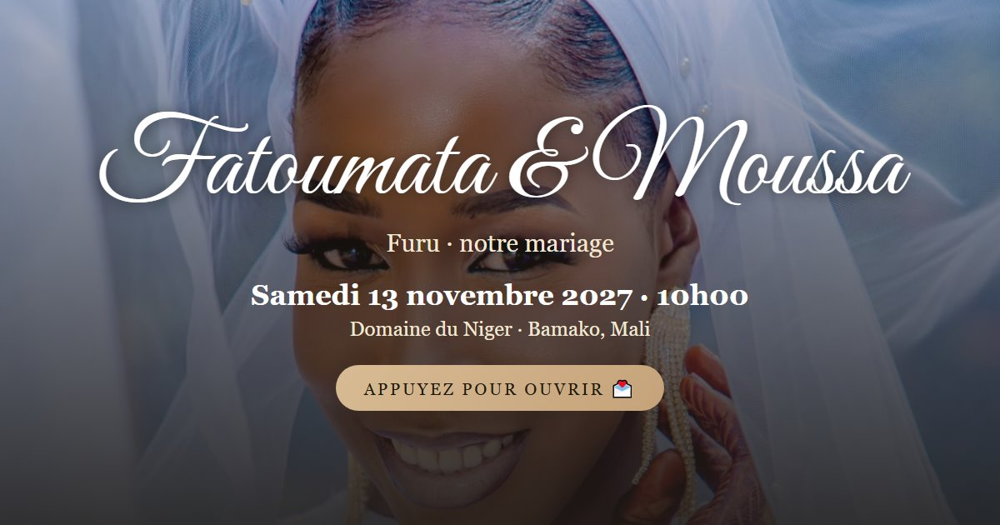
Bogolan
Mali
Français · bambara
Rouleau de tissu de boue qui se relève, parchemin et frises géométriques
Voir la démonstration →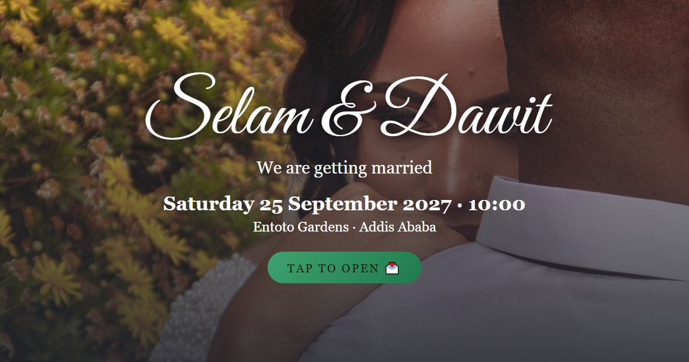
Tibeb
Éthiopie
English · amharique
Pans de coton blanc à bordures tissées qui s'écartent, croix en ornement
Voir la démonstration →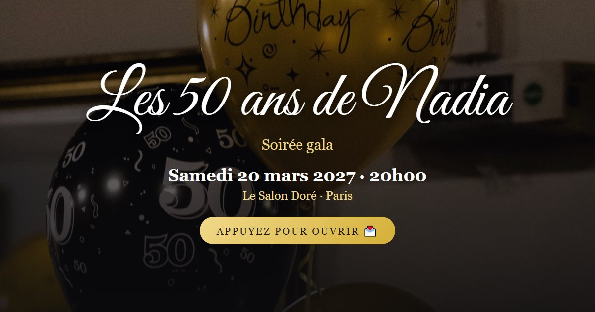
Gala
Anniversaire chic
Français
Rideau de paillettes dorées qui tombe, chiffre monumental, noir et or
Voir la démonstration →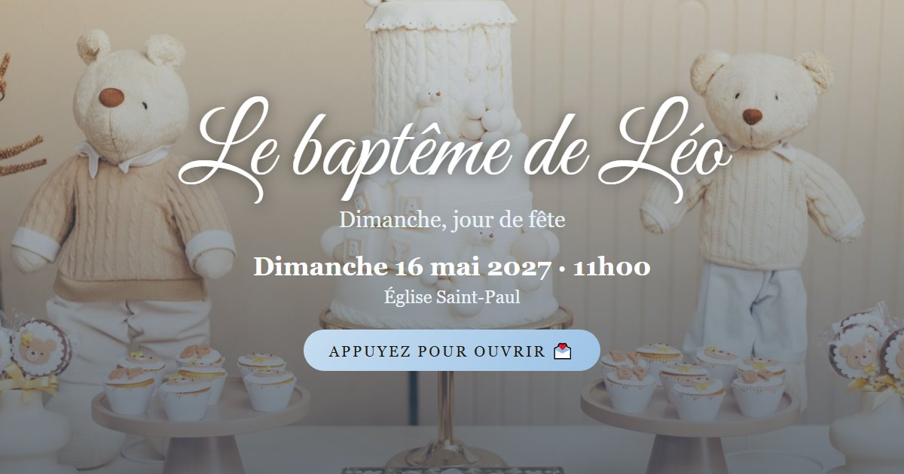
Nuage
Baptême
Français
Nuages qui s'écartent sur un ciel bleu, colombe, douceur pastel
Voir la démonstration →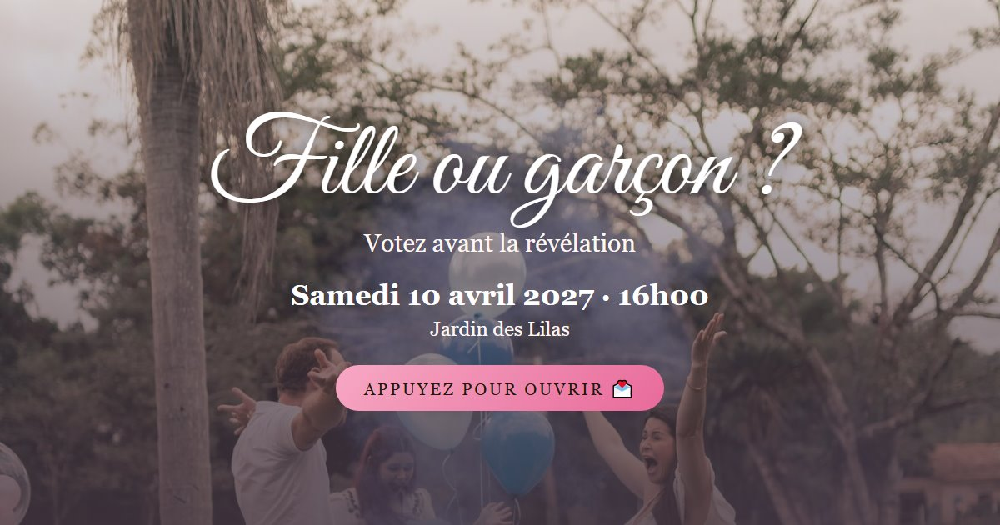
Surprise
Gender reveal
Français
Ballon à éclater, vote des invités, révélation à gratter avec confettis
Voir la démonstration →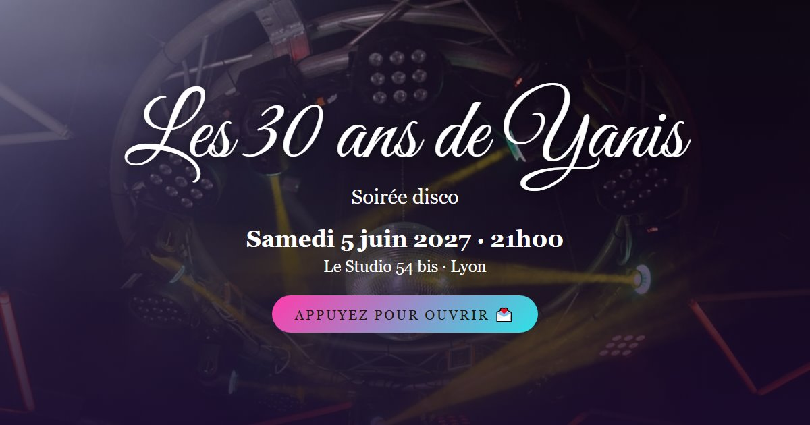
Disco
Anniversaire festif
Français
Boule à facettes qui s'illumine, titres en néon rose et bleu, piste en damier
Voir la démonstration →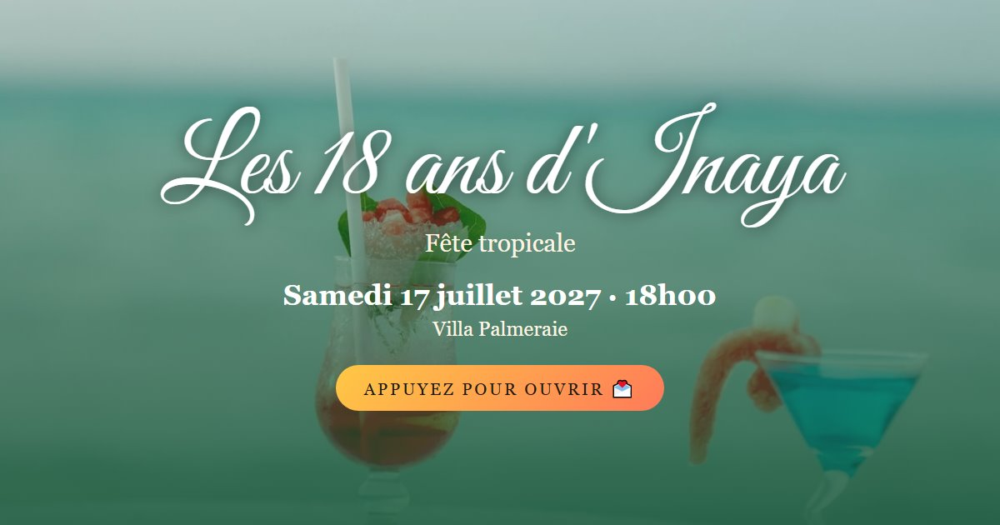
Tropical
Anniversaire en plein air
Français
Feuilles de monstera qui s'écartent, couleurs jungle et corail, carte des cocktails
Voir la démonstration →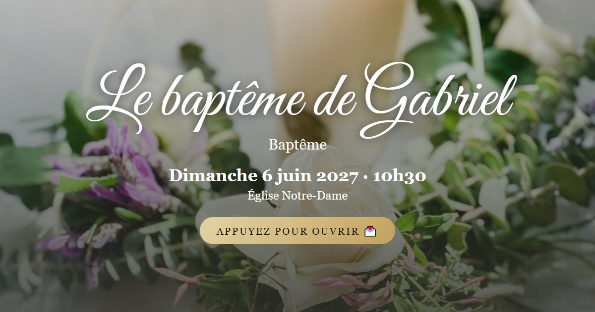
Lumière
Baptême sobre
Français
Cierge qui s'allume et inonde l'écran de lumière, rameaux d'olivier, blanc et or
Voir la démonstration →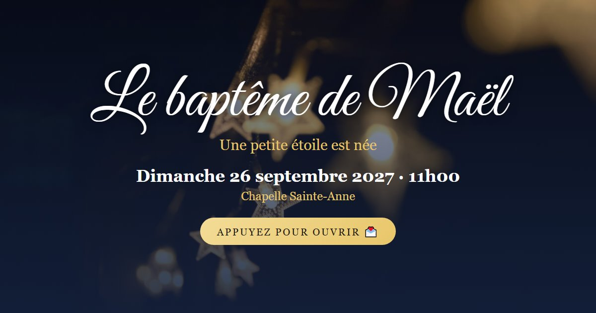
Petite étoile
Baptême
Français
Nuit étoilée et croissant de lune, la nuit devient aube, bleu nuit et or
Voir la démonstration →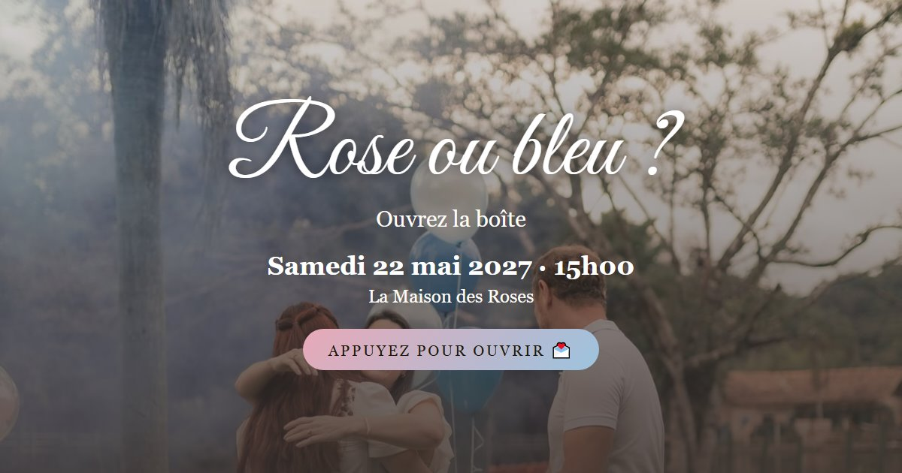
Boîte à ballons
Gender reveal
Français
Boîte cadeau dont le couvercle se soulève, ballons rose et bleu qui s'envolent, jauge des pronostics
Voir la démonstration →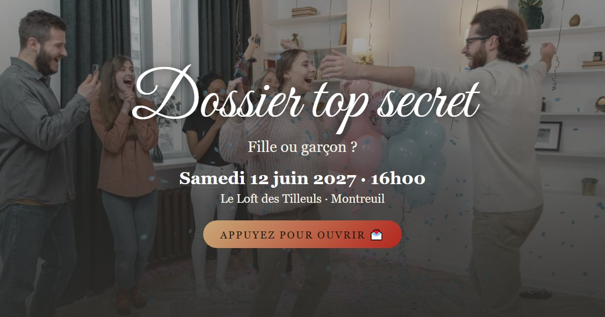
Top secret
Gender reveal
Français
Dossier kraft tamponné « confidentiel », rapport tapé à la machine, passages caviardés à toucher
Voir la démonstration →